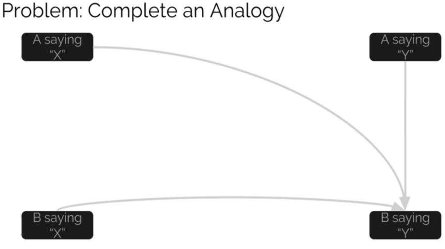
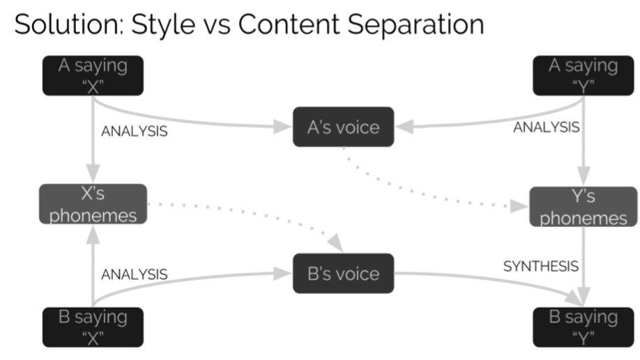
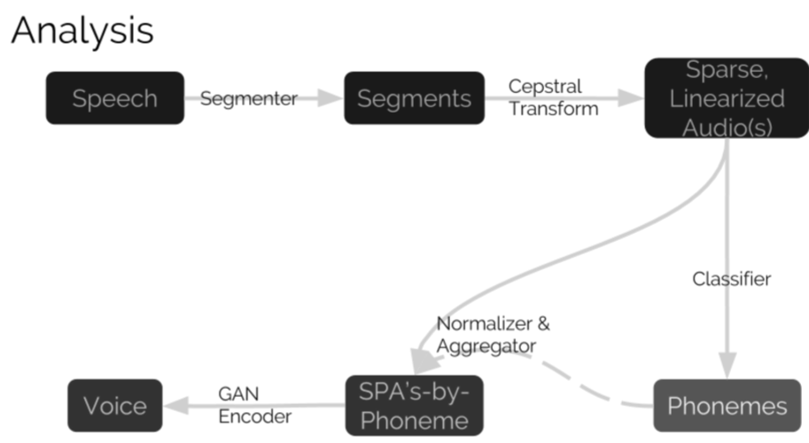
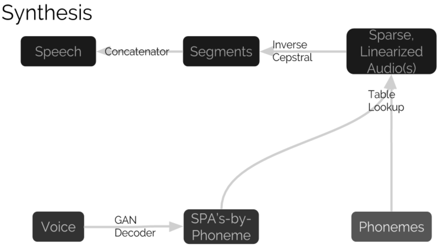

EECS351 Voice Translator
GROUP HISS PRESENT
Idea
We aim to imitate human speech.
Our solution is to transform to and from a hidden representation in which content and style are separate.
Analysis occurs in two stages: extraction of content (top row) and summarization of style (bottom row).
Toward this end, we explore: magnitude smoothing, cepstra, neural classifiers, audio interpolation, and adversarial generation
We were careful to ensure that each step of the analysis is invertible; thus, synthesis occurs as a composition of the inverses of the elements of analysis, in reverse order.
